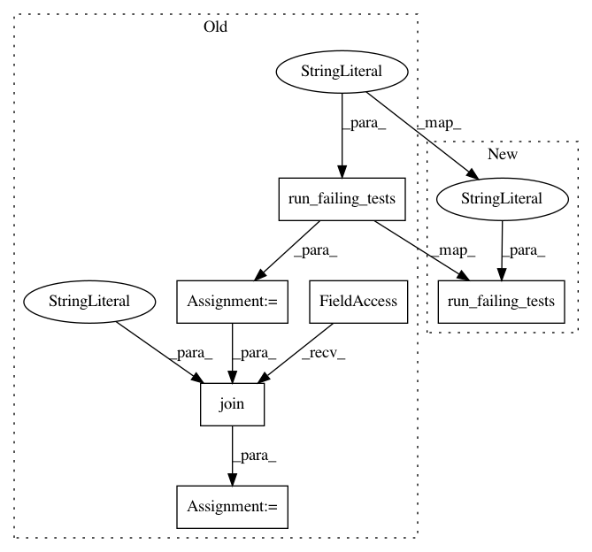

61f685a340fb6fb1ce7133f9ce84ab3945d13358,tests/python/pants_test/backend/python/tasks2/test_pytest_run.py,PythonTestBuilderTest,test_coverage_paths_option,#PythonTestBuilderTest#,422
Before Change
def test_coverage_paths_option(self):
self.assertFalse(os.path.isfile(self.coverage_data_file()))
src_root = self.run_failing_tests(targets=[self.all], failed_targets=[self.all],
coverage="paths:core.py")
covered_file = os.path.join(src_root, "core.py")
all_statements, not_run_statements = self.load_coverage_data(covered_file)
self.assertEqual([1, 2, 5, 6], all_statements)
self.assertEqual([], not_run_statements)
After Change
def test_coverage_paths_option(self):
self.assertFalse(os.path.isfile(self.coverage_data_file()))
self.run_failing_tests(targets=[self.all], failed_targets=[self.all], coverage="lib/")
all_statements, not_run_statements = self.load_coverage_data()
self.assertEqual([1, 2, 5, 6], all_statements)
self.assertEqual([], not_run_statements)
In pattern: SUPERPATTERN
Frequency: 3
Non-data size: 6
Instances
Project Name: pantsbuild/pants
Commit Name: 61f685a340fb6fb1ce7133f9ce84ab3945d13358
Time: 2017-04-15
Author: benjyw@gmail.com
File Name: tests/python/pants_test/backend/python/tasks2/test_pytest_run.py
Class Name: PythonTestBuilderTest
Method Name: test_coverage_paths_option
Project Name: pantsbuild/pants
Commit Name: 61f685a340fb6fb1ce7133f9ce84ab3945d13358
Time: 2017-04-15
Author: benjyw@gmail.com
File Name: tests/python/pants_test/backend/python/tasks2/test_pytest_run.py
Class Name: PythonTestBuilderTest
Method Name: test_coverage_modules_dne_option
Project Name: pantsbuild/pants
Commit Name: 61f685a340fb6fb1ce7133f9ce84ab3945d13358
Time: 2017-04-15
Author: benjyw@gmail.com
File Name: tests/python/pants_test/backend/python/tasks2/test_pytest_run.py
Class Name: PythonTestBuilderTest
Method Name: test_coverage_modules_option